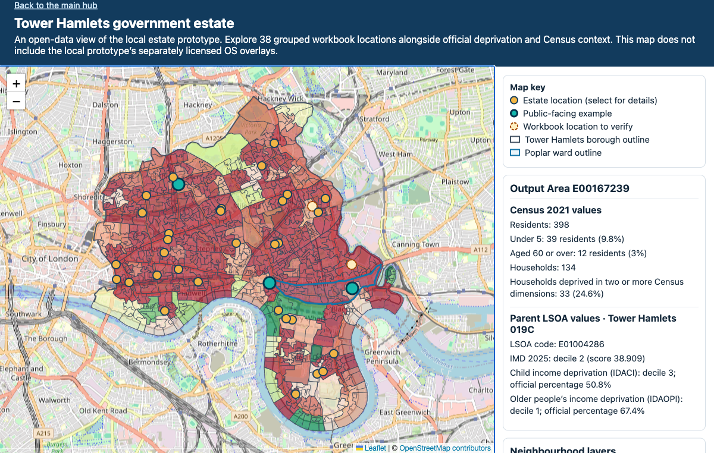
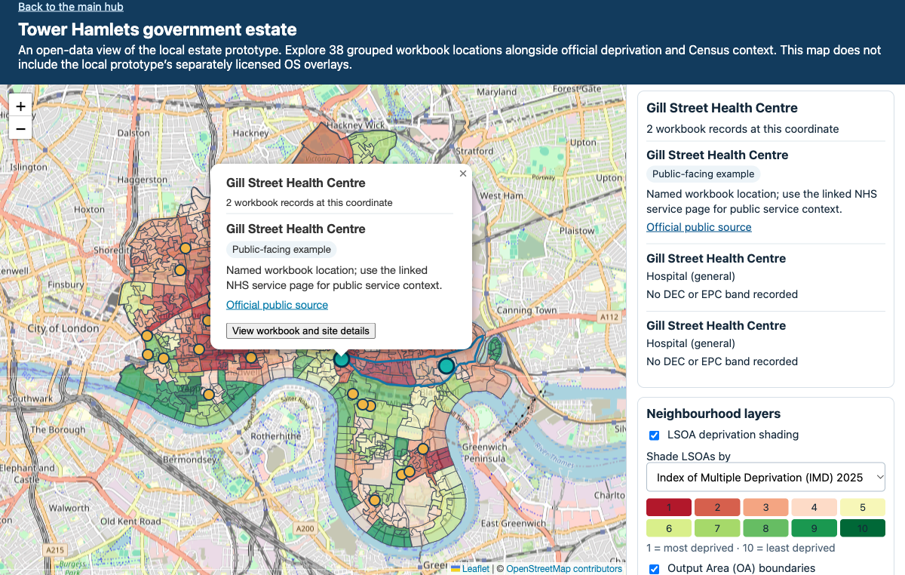
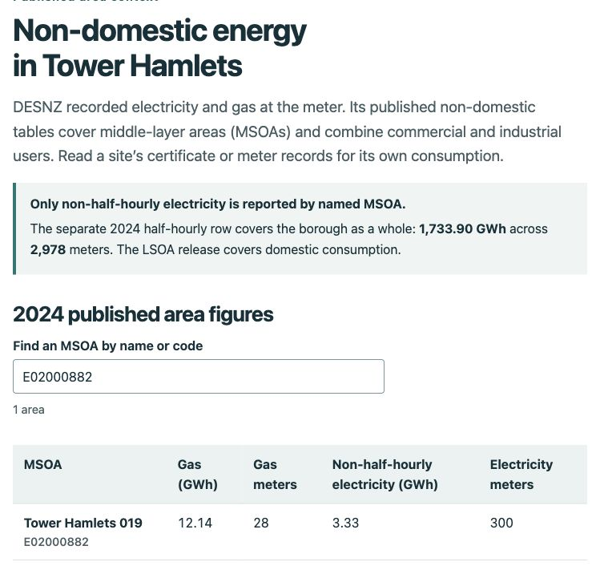
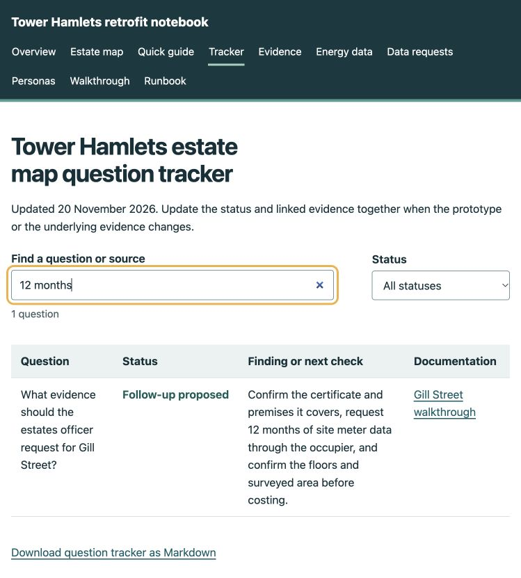

Gill Street Health Centre evidence walkthrough
A public estates officer is deciding what evidence to request before assessing retrofit options for Gill Street Health Centre. The screenshots show the Tower Hamlets Sites companion. The map captures use OpenStreetMap and retain the visible map attribution. The personas and user stories describe the proposed role.
1. Inspect the neighbourhood
On Estate map, choose Child income deprivation (IDACI). Select an Output Area (OA) and read its Census 2021 figures for children under 5, residents aged 60 and over, and households deprived in at least two Census dimensions. In the capture, OA E00167239 has 39 residents aged under 5. Its parent Lower Layer Super Output Area (LSOA), Tower Hamlets 019C, has a 2025 IDACI decile of 3. Decile 1 indicates the most deprived areas nationally. Keep both sets of figures at their published geography when describing context. Neighbourhood sources

2. Check the site and the rating gap
Find Gill Street Health Centre and open the linked NHS service listing. It lists a Healthy Start service at 11 Gill Street, E14 8HQ. The estate workbook groups two rows at this coordinate. Neither records an EPC or DEC band. The screenshot shows that workbook snapshot. NHS service listing · Site identity and scope

A subsequent public register check on 20 November 2026 found a 2017 asset EPC and a 2026 operational DEC at the same site address. Confirm which premises each covers before linking either to a workbook row or comparing performance. The workbook still records its original blank fields. Gill Street register check
3. Read published energy figures at area level
Open Energy data and filter for MSOA code E02000882 to see Tower Hamlets 019. Use the 2024 DESNZ non-domestic gas and non-half-hourly electricity figures as Middle Layer Super Output Area (MSOA) context. The half-hourly electricity figure is published as a borough-wide row. Keep it at that level. The figures describe area consumption and cannot establish what Gill Street uses. Energy evidence and release limits

4. Check the next action in the tracker
Open Tracker and search for 12 months to see the proposed Gill Street follow-up. Use the row to record the next action in your investigation notes. The screenshot shows the proposed follow-up before the register check. Confirm which spaces and meters the two certificates cover and reconcile their area definitions. Ask the occupier for 12 months of site meter data by fuel, with meter coverage and shared supplies identified. Confirm the floors and areas covered by the survey before costing. Question tracker · Evidence to request from occupiers

The decision is to request evidence. Current energy performance and retrofit suitability remain undetermined.